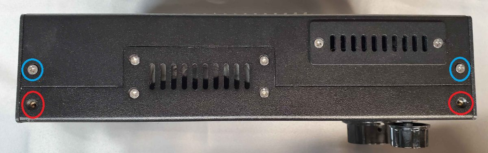
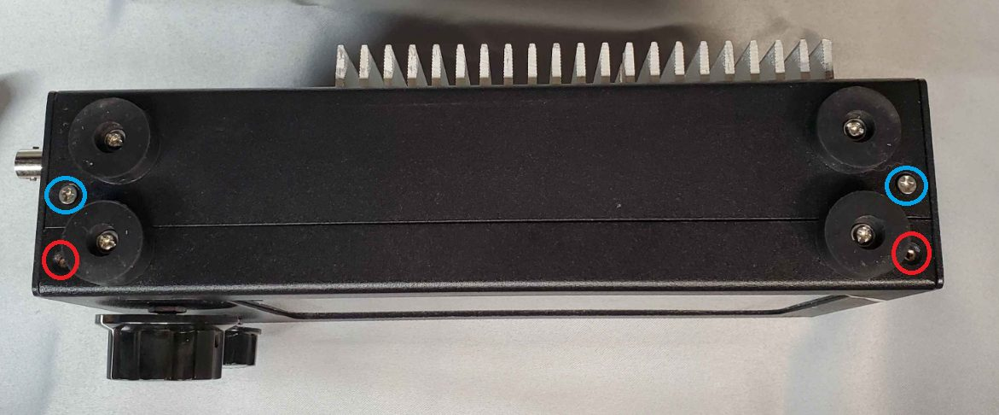
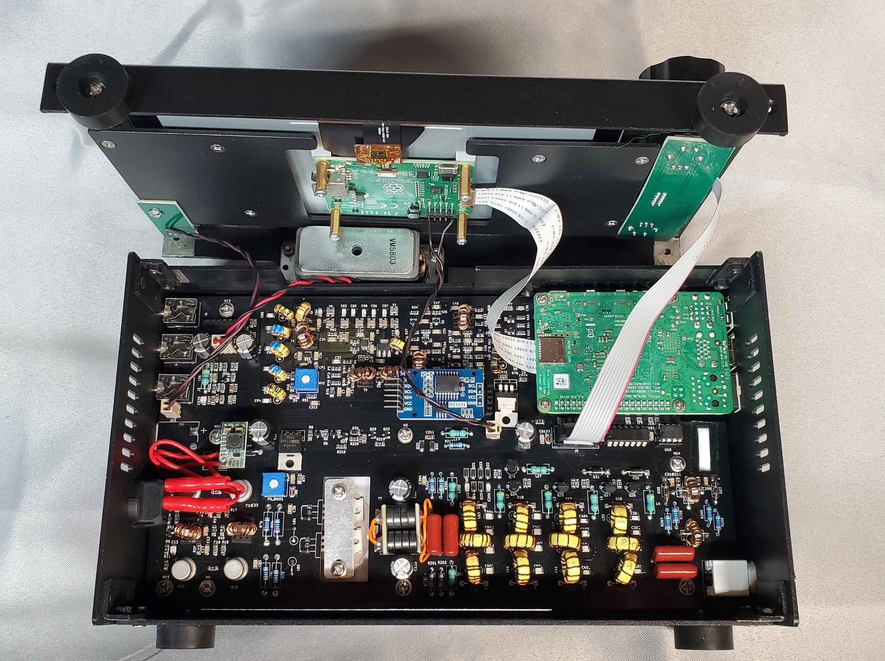
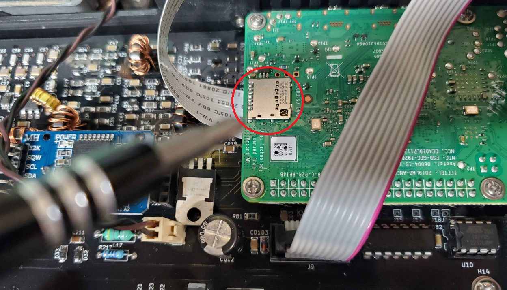

Opening the case and swapping the SD card#
The Raspberry Pi and its microSD card sit inside the sBitx. You only need to open the case to swap the card, adjust the PA bias or work on the boards. To put a new image on the card without opening the case, see SD card images and backups.
Before you start:
- Download a backup of your settings, log and calibration.
- Shut the radio down (More → Shut down) and unplug the power and the antenna.
- Work on a flat, static-free surface, and keep the screws in a tray.
You need a Phillips screwdriver.
1. Top screws#
On the top of the case, remove the two screws circled in red and loosen (don't remove) the two circled in blue.

2. Bottom screws#
Turn the radio over. Remove the two screws circled in red and loosen the two circled in blue.

3. Separate the halves#
Gently pull the top and bottom sections apart. Don't force them: the display and speaker cables still join the two halves.
4. Rest the top section on its speaker#
Lay the top section back on its speaker so the cables aren't strained. Support the screen so it can't tip over.

5. Remove the SD card#
The microSD slot is on the edge of the Raspberry Pi, next to the ribbon cable (circled). Pull the card straight out (tweezers or a small screwdriver help), and slide the new one in the same way round as the old one.

Putting it back together#
Reverse the steps: seat the halves without pinching a cable, then fit and tighten the four red screws and tighten the four blue ones. Connect the power and switch on. A freshly written card takes a little longer on its first start (see Installing and updating).